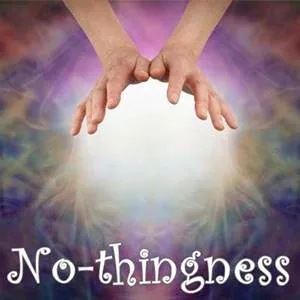
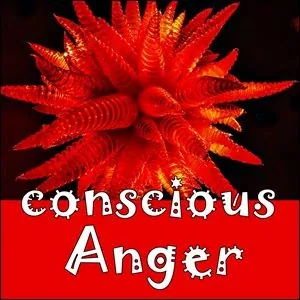

New Results on Strikingly

Shift Your Point Of Origin
NEWRESUL.01
You can shift your Point of Origin from "not enough"... from scarcity ...from competition ...from "other people have to care for me," to...???
First: where are you?
The original Point of Origin is "I am a victim of circumstances."
The new Point of Origin is "I create my life this way."
This experiment is to gain new possibilities and distinctions about shifting your Point of Origin. Do this experiment over a 3 day stretch of time.
Commit two side-by-side pages in your Beep! Book, and visit the Point of Origin entry in the Possibility Management Distinctionary.
While you read, during time in the three days, write and/or draw about what you glean while reading, on these two pages.
In between reading and writing, watch your self as you move through your day. Where is your Point of Origin?
In scarcity? Competition? In external authority?
Write about it on the next page of your Beep! Book.
When you have the three pages in your Beep! Book filled, go to the page and write down three Experiments you can do next about Shifting Your Point of Origin.
Then go to your free account at StartOver.xyz and fill in this experiment as NEWRESUL.01.
This experiment is worth 1 Matrix Point.
[

](https://beepbook.mystrikingly.com/)
Carrying Stories
NEWRESUL.02
It is best if you can do this experiment where there will be at least 3 people you can interact with over the course of 20 minutes.
For 20 minutes, or as long as it takes for you to have interacted with 3 people, walk around with your posture slumping, exaggerating it.
Say out loud all the victim stories that come up in your head, like "nobody wants me," "I am not good enough," "nobody notices my contributions," and "I have no will to live."
Consider:
What is the result that you are creating from carrying these stories?
How does the Universe interact with you?
How do the people interact with you?
After doing this for 20 minutes and interacting with at least 3 people, write about this in your Beep! Book, or tell a partner from your Possibility Team or 3-Cell about what you did and what you noticed.
Then go to your free account at StartOver.xyz and fill in this experiment as NEWRESUL.02 it is worth 1 Matrix Point.
[
](https://noticing.mystrikingly.com/)
It's not fair
NEWRESUL.03
On a fresh page in your Beep! Book, make a list of everything that is not fair in your life:
in your personal relationships,
in your house,
family,
work,
community,
city,
country,
world.
Check out the results of having created those stories of unfairness.
Write about what you notice.
Let a day go by, and then sit down again with this page in your Beep! Book. What else do you notice?
It is not about changing the story. It is about noticing.
Tell a partner from your Possibility Team, 3-Cell or another Team about what you noticed from doing this experiment.
Then go to your free account at StartOver.xyz and fill in this experiment as NEWRESUL.03. It is worth 1 Matrix Point.
Out of Control
NEWRESUL.04
Each of the stories we tell is a space and determines what is possible, it determines the results.
This experiment is about noticing about that.
In your Beep! Book, on a fresh page, make a complaining list about everything that is out of control:
I don't get to control this:....
I can't change this:....
I have no power about this:....
Nobody listens to me about this:...
This is not my fault:...
I am powerless about:.....
Write about that. Notice about the results happening for the rest of the day from how you are in these Story Worlds.
Write about or tell a partner from your Possibility Team, 3-Cell or another Team about what you noticed from doing this experiment.
Then go to your free account at StartOver.xyz and fill in this experiment as NEWRESUL.04. It is worth 1 Matrix Point.
[

](https://nothingnesss.mystrikingly.com/)
New Results In Your Room
NEWRESUL.05
Take one hour to rearrange all the furniture and everything in your bedroom in a way you never have done it before.
For the next week notice what else changes.
At the end of each day during this week, to no-one, into the No-thingness, before you go to bed; speak out loud for at least 5 minutes about what went differently that day from having the furniture rearranged.
At the end of the week, enter Matrix Code NEWRESUL.05 in your free account at StartOver.xyz.
This Experiment is worth 1 Matrix Point.
[

](https://yourteams.mystrikingly.com/)
Dating App
NEWRESUL.06
This experiment is also about noticing how the identity and stories we tell create results in our life.
Make a profile on an online dating app using the description of yourself as identifying with all the things that are out of control.
Over the course of a month, watch for New Results about what people you attract.
Take notes about it in your Beep! Book.
After a month, share about what happened with one of your Teams, and decide if you want to create a new profile.
Then go to your free account at StartOver.xyz and fill in this experiment as NEWRESUL.06. It is worth 1 Matrix Point.
[

](https://consciousanger.mystrikingly.com/)
Rage Up to Decide
NEWRESUL.07
Conscious Anger (archived — not captured) can be used to create new results.
With a partner, maybe in a Rage Club, but you can do this as a team of two, each list in your Beep! Book decisions you made in your lives that were unconscious decisions.
Rescue moves.
Being nice moves.
Doing things for others.
Doing things for approval.
Needing to prove yourself.
Taking on other people's problems.
For each unconscious decision, write the results that happened or have been happening.
Take 10 minute times turns, and when it is your turn, use a hand towel, twisting it in your hands, to help your anger come up while you tell your partner about these unconscious decisions and the results that have been happening. Really let your anger happen. Notice all the things there is to say, what the rage says. Your partner says, "Thank you!" And "GO!"
Then listen and hold space while your partner has a turn.
After each of you have had a turn, each share for at least 5 minutes about what you learned form doing this experiment.
Then you can each go to your free accounts at StartOver.xyz and fill in this experiment as NEWRESUL.07. It is worth 1 Matrix Point.
[

](https://yourgremlin.mystrikingly.com/)
Become a 'I'm not good enough' story hunter
NEWRESUL.08
In your Beep! Book, write the story of your life while you are being a "not good enough" story hunter.
Notice all the times you decided:
"I am not as good as them."
"They are the cool team."
"I have to prove myself to them."
Notice what showed up as the consequences of your behaviours from telling yourself that story.
For the next 3 days, split your attention, or give your Gremlin the job so you are noticing these stories happening again.
Notice the results of them happening.
After three days of noticing and note-taking, go to your free account at StartOver.xyz and fill in this experiment as NEWRESUL.08. It is worth 1 Matrix Point.
[

](https://becomeanexperimenter.mystrikingly.com/)
New Results in the Morning
NEWRESUL.09
For this experiment you might need to Shift Your Identity to "Experimenter" to do whatever it takes to get up at 4:30am.
Wake up at 4:30am and go do things that are not normally done at 4:30am:
cook dinner food,
hang out your laundry,
pull the weeds in the garden,
walk the duck.
Notice the New Results during the morning and for the rest of the day. Write them down in your Beep! Book at the end of the day.
Then enter Matrix Code NEWRESUL.09 in your free account at StartOver.xyz.
This Experiment is worth 1 Matrix Point.
[
](https://declaring.mystrikingly.com/)
Declare a New Decision
NEWRESUL.10
New decisions create new possibilities and new behaviours create new results.
Put up your right hand and declare:
"I am willing to try new things to create new results!"
Go ahead, do it.
No one is stopping you. No one can do it for you.
Next, for a week, in the morning, say it again out loud:
"I am willing to try new things to create new results!"
During each day, find at least one person to say it to, AND each day, do at least one thing you have never done before.
Even if it seems stupid, silly, impolite or crazy, do it.
Be okay with making messes you are willing to clean up.
Notice the new results happening.
After a week, enter Matrix Code NEWRESUL.10 in your free account at StartOver.xyz.
This Experiment is worth 1 Matrix Point.
[
](https://distinctionary.mystrikingly.com/)
New Distinctions
NEWRESUL.11
New distinctions create new results.
Go to the online Distinctionary, and find (under "R") the listing for "results."
Then read ten more listings, taking notes about each distinction.
From these eleven, choose five distinctions, and from your notes make five posters to put on your wall or door, and read them three times a day for three days.
Notice for new results that come from having these distinctions.
After three days, write for at least 10 minutes in your Beep! Book about what happened, and enter Matrix Code NEWRESUL.11 in your free account at StartOver.xyz.
This Experiment is worth 1 Matrix Point.
You can keep doing more until you want to stop.
[

](https://setcontext.mystrikingly.com/)
New Context
NEWRESUL.12
Perhaps you have heard: "The Space determines what is possible."
Perhaps you did not yet hear: "The Context determines the qualities of the Space."
The context you set in a space determines what is possible in that space. This is amazingly big stuff to experiment with.
Here is an experiment to start with.
A relationship is a kind fo space. Identify a relationship that you have where you are wanting new results.
For at least 10 minutes in your Beep! Book, write what you can about the context of that relationship.
Next, read through the theory sections of the Set Context website, keeping in mind this relationship.
Then, in your Beep! Book, write for at least 20 more minutes, clarifying and making conscious more about the context of the relationship, and new context that is possible.
Then set up a call with the person and tell them the call is about creating new context for the relationship, and share what you discovered in the first steps of this experiment.
For the next month, notice what new results happen.
Then enter Matrix Code NEWRESUL.12 in your free account at StartOver.xyz.
This Experiment is worth 2 Matrix Points.
[
](https://choosing.mystrikingly.com/)
Refusing to Limit Yourself to the Given Options
NEWRESUL.13
New Options create new possibilities and new results.
In your Beep! Book write a list of the options on the "menu" that you are choosing off of, in regard to different areas in your life like eating, clothing, conversations you have, activities you do.
Notice new options you can take, and list those.
What can you have for breakfast besides breakfast food?
What can you say to your neighbour besides Good Morning?
What can you plant in your vegetable or flower garden besides vegetables and flowers?
Where and how can you get clothes besides where and how you have been getting them?
Use Your Power to Choose to refuse to limit yourself to the given options for one week.
Each day, at least once a day for at least 10 minutes, write in your Beep! Book about the new results happening from refusing to limit yourself to the (previously) given options.
When the week is over, enter Matrix Code NEWRESUL.13 in your free account at StartOver.xyz.
This Experiment is worth 1 Matrix Point.
[

](https://possibilityteam.mystrikingly.com/)
Find and Do Invisible Options
NEWRESUL.14
New options are everywhere, invisible until you notice them.
This experiment is about practicing noticing them, and choosing them and creating new results.
Do this experiment in your Possibility Team, or with a group of friends.
Go together to a park or village space. Stand together in a place that is "Ground Zero."
Take turns, while you look around the park or village space spotting the options of things to do that are not socially appropriate, visible or obvious, and say them out loud.
People in the team, do that new option.
Dance The Macarena.
Give all your money to the flower lady.
Get a coffee that's not from Starbucks.
You might need to leave the "Ground Zero" space to do it. If you do, come back after the option is done, and take another turn spotting new options and doing the options spotted by others.
Keep going until an hour has passed. Or don't take that option.
After doing this for at least one hour each person in the Team can enter Matrix Code NEWRESUL.14 in their free account at StartOver.xyz.
This Experiment is worth 1 Matrix Point.
[
](https://distinction.mystrikingly.com/)
Carry a Tool of Distinction
NEWRESUL.15
Making distinctions creates new results.
For a whole week, carry a tool of distinction. Carry a pen. Carry a big wooden spoon. Carry a wand.
Let this tool represent your Sword of Clarity and use it all week long to make distinctions.
Point it to THIS, and THAT.
Use the spoon to scoop things, the pen to draw invisible and visible lines, the wand to move THIS out of THAT, to differentiate in ways that are not obvious.
After a week, for at least 20 minutes in your Beep! Book, write about how making new distinctions created new results.
Then enter Matrix Code NEWRESUL.15 in your free account at StartOver.xyz.
This Experiment is worth 1 Matrix Point.
[
](https://shiftidentity.mystrikingly.com/)
New Results With a Wheelbarrow
NEWRESUL.16
Take a wheelbarrow around the town or the neighbourhood.
Look the part. Shift Identity to do this experiment. Wear a hat that makes you look like a professional wheelbarrower.
While you wheel the wheel barrow around it, put things in the wheelbarrow that are not yours.
Make a circle, put something in and take it to the next street, and take it out to put the next thing in.
Move things around.
If someone asks you what you are doing, say, "I am creating new results."
After doing this for at least a morning or an afternoon, enter Matrix Code NEWRESUL.16 in your free account at StartOver.xyz.
This Experiment is worth 1 Matrix Point.
[
](https://beingwith.mystrikingly.com/)
It's My Fault
NEWRESUL.17
For one whole day, whatever is happening tell people: "It is my fault."
No matter what, take the fault.
This gives you an opportunity to create new results.
Do this without being hard on yourself.
Do this while Being With the people.
When the day is done, enter Matrix Code NEWRESUL.17 in your free account at StartOver.xyz.
This Experiment is worth 1 Matrix Point.
[
](https://do-over.mystrikingly.com/)
Do Overs for New Results
NEWRESUL.18
Do 50 Do-Overs in one week to create New Results.
Write a list in your Beep! Book of things from the past that you want to do over.
Read the Do-Over website.
For one week, start to do the Do-Overs. Look for other chances to do more Do-Overs from things that happen, that aren't from your list from things in the past.
Write the Do-Overs you do, and do at least 50 by the end of the week.
For extra credit: do a Do-Over from the future:
before you do the old thing, do the new thing.
At the end of the week, enter Matrix Code NEWRESUL.18 in your free account at StartOver.xyz.
This Experiment is worth 1Matrix Point.
[

](https://numbnessbar.mystrikingly.com/)
Stop Smiling
NEWRESUL.19
Just don't smile for an entire week.
Refuse to enter the Smiley Face Space.
Note: this is not about becoming a statue, or raising your Numbness Bar.
Notice New Results happening. Each day write for at least 10 minutes in your Beep! Book about how this is going.
At the end of the week, enter Matrix Code NEWRESUL.19 in your free account at StartOver.xyz.
This Experiment is worth 1 Matrix Point.
[

](https://splityourattention.mystrikingly.com/)
Wait 25 Seconds
NEWRESUL.20
For one whole day, whenever someone says something, wait 25 seconds before you decide to do anything about it.
To do this, you will need to split your attention: about 8% of your attention will be counting 25 seconds. Another percentage will be noticing what is happening. Another percentage will be noticing what New Results are happening.
At the end of the day, write for at least 10 minutes in. your Beep! Book about what happened, and enter Matrix Code NEWRESUL.20 in your free account at StartOver.xyz.
This Experiment is worth 1 Matrix Point.
[

](https://minimizenow.mystrikingly.com/)
The Illusion of Progress
NEWRESUL.21
The new results you get in this experiment will have something to do with breaking the Illusion of Progress.
New Things are mostly things that happened before, even though when they happen, it can seem as if they are New Things. Since things that happen over and over have lots of things happen in between, an Illusion of Progress happens.
For a whole week, in as many situations as possible, at least 3 times a day, when somebody says something, repeat exactly what they said, and say it as if it was being said for the first time, from a Small Here and Now.
With this experiment, you are skipping all the things in between and saying the thing again, as if it is for the first time.
If the person says, "I just said that," say, "this is the Illusion of Progress."
At the end of the week, write for at least 10 miutes in your Beep! Book, and then enter Matrix Code NEWRESUL.21 in your free account at StartOver.xyz.
This Experiment is worth 1 Matrix Point.
[
](https://writeyourarticle.mystrikingly.com/)
Listen to Hear Clarity
NEWRESUL.22
We hear what we want to hear.
Experiment with wanting to hear something new.
For a whole day, whenever someone else is talking, listen for a purpose: to hear Clarity.
It can be someone talking to you, or characters in a show, or a podcaster or the news, anything.
Listen to what is being said and specifically listen to hear Clarity.
You only need the tiniest bit of evidence of it. When you hear it, amplify that.
Notice new results that come from listening for, hearing and amplifying Clarity.
Write about this in your Beep! Book, tell someone about it, keep listening for Clarity.
Then write an article about it.
Then enter Matrix Code NEWRESUL.22 in your free account at StartOver.xyz.
This Experiment is worth 2 Matrix Points.
[

](https://yourattention.mystrikingly.com/)
Listen to Hear Love
NEWRESUL.23
For another day, specifically listen to hear Love.
You only need the tiniest bit of evidence of it. When you hear it, amplify that. Use Your Attention, and Notice.
Notice the new results that come from listening for, hearing and amplifying Love.
Write a poem about this experiment.
Then, record a video of you sharing the poem.
Then enter Matrix Code NEWRESUL.23 in your free account at StartOver.xyz.
This Experiment is worth 1 Matrix Point.
For more new results, share your poem and/or video with your circle.
[

](https://possibility.mystrikingly.com/)
Listen to Hear Possibility
NEWRESUL.24
For another day, listen to what is being said and especially listen to hear Possibility. You only need the tiniest bit of evidence that Possibility is happening. When you hear it, amplify it.
Notice the New Results from listening for, hearing and amplifying Possibility.
At least three times during the day, tell about the Possibility happening. Tell your friend, housemate or partner, tell your plant, or the lizards, squirrels and birds outside about the new results. Tell your reflection in the mirror about them.
Then enter Matrix Code NEWRESUL.24 in your free account at StartOver.xyz.
This Experiment is worth 1 Matrix Point.
[

](https://radicalreliance.mystrikingly.com/)
Radical Reliance on Possibility
NEWRESUL.25
Shift into the context of Radical Reliance for one day.
Create New Results by looking at somebody and commit to creating Possibility for them, relying radically on the Bright Principle of Possibility.
Tell them, "I have shifted the context of this conversation to Radical Reliance on Possibility."
This is a next step after the previous Experiment. Listen for, amplify and act upon Possibilities and notice what New Results happen.
Write in your Beep! Book the new results this experiment creates in your life and for others.
At the end of the day, enter Matrix Code NEWRESUL.25 in your free account at StartOver.xyz.
This Experiment is worth 1 Matrix Point.
[

](https://ecco.mystrikingly.com/)
Radical Reliance on ECCO
NEWRESUL.26
Shift to the context of Radical Reliance on the Bright Principle of ECCO, the Earth Coincidence Control Office, noticing coincidences, and relying on them, following them, including the coincidence of having an intuition happen at a moment in time.
Do this for one day.
Write in your Beep! Book the new results this experiment creates in your life and for others.
When the day is over, enter Matrix Code NEWRESUL.26 in your free account at StartOver.xyz.
This Experiment is worth 1 Matrix Point.
[
](https://becomegrounded.mystrikingly.com/)
Radical Reliance on Gaia and Being Grounded
NEWRESUL.27
For at least one day, shift to the context of Radical Reliance on the Bright Principle of Gaia, relying on and using your Grounding Cord to source information from Gaia and to release energy to Gaia.
Write in your Beep! Book for at least 10 minutes the new results this experiment creates in your life.
enter Matrix Code NEWRESUL.27 in your free account at StartOver.xyz.
This Experiment is worth 1 Matrix Point.
[
](https://speakfromtheunknown.mystrikingly.com/)
Speaking from the Unknown
NEWRESUL.28
For a whole day, Speak From Nothing, from the Void, from the Unknown.
Learn to use Speaking from the Unknown to source New Results, in the offers you make, negotiations, agreements.
At the end of the day, write for at least 10 minutes about how this went, and enter Matrix Code NEWRESUL.28 in your free account at StartOver.xyz.
This Experiment is worth 1 Matrix Point.
[
](https://startoveragain.mystrikingly.com/)
The Power of Integrity and Impeccability
NEWRESUL.29
This experiment is about creating new results in your life by cleaning up messes, using the Power of Integrity and Impeccability.
Get together a team to help you do this experiment.
Make a list in your Beep! Book of the promises you have made that you have not been engaging with.
Write who you made them to, and how you feel and think about how things have been going.
Reach out to all the people you have made promises to and let them know that you are starting over about the promise.
Complete each and every commitment.
You may need several Emotional Healing Processes. Ask for them.
Write about what happens in your Beep! Book.
When you have done this with 10 people, enter Matrix Code NEWRESUL.28 in your free account at StartOver.xyz.
Keep going.
This Experiment is worth 1 Matrix Point.
[
](https://becomecommitted.mystrikingly.com/)
Keep a Commitment to Yourself
NEWRESUL.29
Keep a commitment you make to your self.
Make a commitment to yourself.
I made a commitment to dig out and transplant five Mayfruit trees from a ditch where they were going to be ripped out to make way for a wider road.
I had to buy new planters and lug the planters out to the ditch and steal dirt and digging tools but I kept the commitment to myself to doing it, and it felt great. Even if it was neurotic, and my arms and shoulders did not feel good. Now there are five Mayfruit trees that didn't get ripped out growing in the back yard.
You could commit to using gasoline to get the labels and glue and off of all the jars in your house.
You could commit to washing all the windows of your house.
Write about the commitment, and about what it took to keep it.
Write about what New Results happened from making this commitment happen.
Then enter Matrix Code NEWRESUL.29 in your free account at StartOver.xyz.
This Experiment is worth 1 Matrix Point.

New Words, New Results
NEWRESUL.30
Choose and learn five new words from different languages and make them part of your regular vocabulary.
Don't use words that are part of you region, for example, if you live in New Zealand, don't choose Maori words.
You might like to look at this article that has a list of words that exist in languages other than English for emotions that we don't have words for in English.
Notice the different results that happen when you use these five new words, and when people hear you use these words.
After a month of using the new words, write about what happened for at least 10 minutes in your Beep! Book and then enter Matrix Code NEWRESUL.30 in your free account at StartOver.xyz.
This Experiment is worth 1 Matrix Point.
[
](https://archetypallineage.mystrikingly.com/)
New Results From Ceremonial Attire
NEWRESUL.31
Get yourself attire that is more formal, more ceremonial or from another culture, and for a whole day do your life with these clothes on. Maybe this is the ceremonial attire of your Archetypal Lineage.
Notice if you talk differently or if people talk to you differently, if you move into spaces differently, if you get new kinds of conversations.
At the end of the day, write about how this went, about the new results you experienced, in your Beep! Book, and then enter Matrix Code NEWRESUL.31 in your free account at StartOver.xyz.
This Experiment is worth 1 Matrix Point.
[
](https://becomeapirate.mystrikingly.com/)
Create New Results for Others
NEWRESUL.32
Commit to creating unreasonable new results for others.
Make an unreasonable commitment to the success of others and make it happen. Do whatever it takes. This is a Pirate (archived — not captured) Agreement, you don't even have to say it. Do the unreasonable things that come from committing to their commitment.
Do this for one week, and write about it each day.
Then enter Matrix Code NEWRESUL.32 in your free account at StartOver.xyz.
This Experiment is worth 1 Matrix Point.
[

](https://gameworldbuilder.mystrikingly.com/)
New Gameworld: New Results
NEWRESUL.33
Get two or three people together and design a gameworld in which the experience is a new result.
For example, I was talking with a young guy who was moving 8 people into a house in France, into a mansion, for three months, to film a movie. They have a beginning and and end to their movie and they don't know what will happen in the middle.
With your teammates, write down the codex and the rules of engagement for your Gameworld.
enter Matrix Code NEWRESUL.33 in your free account at StartOver.xyz.
This Experiment is worth 1 Matrix Point.
Notice Avoiding
NEWRESUL.34
This is another experiment about noticing.
For a whole week, carry a small notebook or piece of special paper that is on you at all times, and something to write with.
As you move through your day, notice all the ways you avoid making new results by NOT acting on things you get possibilities about.
That thing you thought about saying to the check out lady? That seat you didn't sit in on the train? That leap you didn't take, that feedback you didn't give, that song you didn't sing out loud while you were walking? Write them all down.
At the end of each day for the whole week, look at your list and write in your Beep! Book five new results that could have happened if you had done each thing you avoided doing, but that couldn't happen because you avoided.
Then enter Matrix Code NEWRESUL.34 in your free account at StartOver.xyz.
This Experiment is worth 1 Matrix Point.